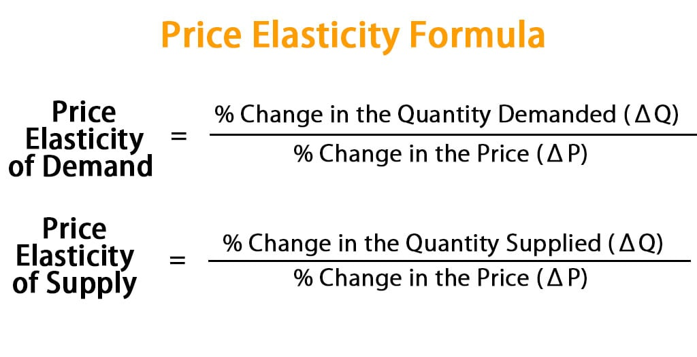
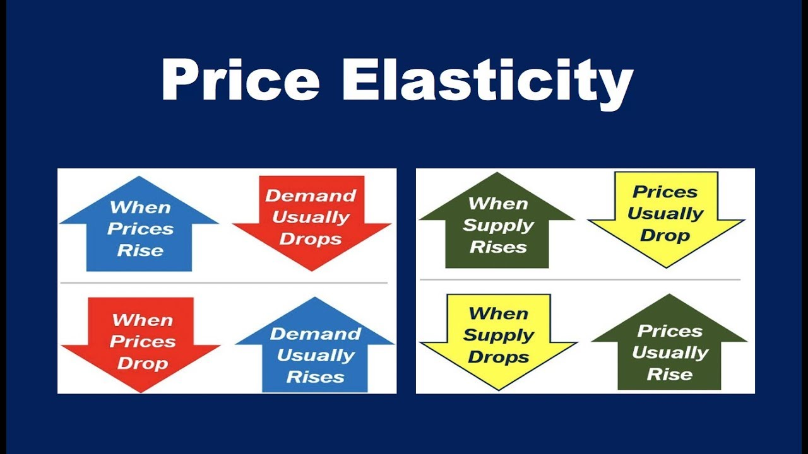

Ano ang Price Elasticity?
Ang Price Elasticity ay ang sukatan kung gaano kabilis o kalaki ang reaksyon ng mamimili (demand) o prodyuser (supply) sa pagbabago ng presyo. 🌸
Mahalaga ito upang malaman ng mga negosyante at ekonomista kung gaano kasensitibo ang merkado sa pagbabago ng presyo.
📉 Price Elasticity of Demand (PED)
Sinusukat kung gaano kabilis magbago ang dami ng demand kapag nagbago ang presyo.
Formula: % pagbabago sa demand ÷ % pagbabago sa presyo
| Uri | Formula Resulta | Katangian at Halimbawa |
|---|---|---|
| Elastic | > 1 | Malaki ang reaksyon. Kaunting taas ng presyo, bumabagsak agad ang demand. (milk tea, gadgets) |
| Inelastic | < 1 | Maliit ang reaksyon. Kahit tumaas ang presyo, patuloy pa rin ang pagbili. (bigas, gamot, gasolina) |
| Unitary | = 1 | Pantay ang pagbabago ng presyo at demand. |
| Perfectly Elastic | ∞ | Kaunting taas lang ng presyo, wala nang bibili. |
| Perfectly Inelastic | 0 | Kahit tumaas presyo, pareho pa rin ang demand. (insulin) |
📈 Price Elasticity of Supply (PES)
Sinusukat kung gaano kabilis magdagdag ang prodyuser ng supply kapag tumaas ang presyo.
Formula: % pagbabago sa supply ÷ % pagbabago sa presyo
| Uri | Formula Resulta | Katangian at Halimbawa |
|---|---|---|
| Elastic Supply | > 1 | Mabilis magdagdag ng supply ang prodyuser. (cupcakes, t-shirt printing) |
| Inelastic Supply | < 1 | Mabagal ang produksyon kaya mahirap dagdagan ang supply. (mangga, kotse) |
| Perfectly Inelastic | 0 | Hindi nadaragdagan kahit tumaas presyo. (antigong bagay) |
| Perfectly Elastic | ∞ | Walang limit ang supply basta may demand. |
Mga Salik na Nakaaapekto
- Para sa Demand: Pangangailangan o luho, may kapalit ba, kakayahan ng mamimili, at oras ng pag-adjust.
- Para sa Supply: Bilis ng produksyon, availability ng resources, teknolohiya, at panahon ng produksyon.
Halimbawa sa Totoong Buhay
- Kapag tumaas presyo ng milk tea, maraming estudyante ang magtitipid — elastic demand.
- Kapag tumaas presyo ng bigas, bibilhin pa rin ng tao — inelastic demand.
- Kung tumaas presyo ng cake, mabilis magdagdag ang baker — elastic supply.
- Kung tumaas presyo ng mangga, hindi agad madaragdagan ang supply dahil sa tagal ng taniman — inelastic supply.

